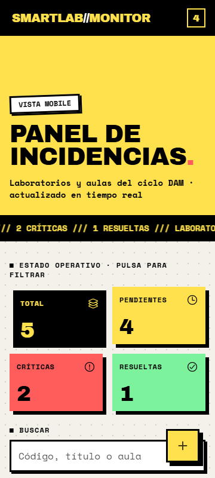
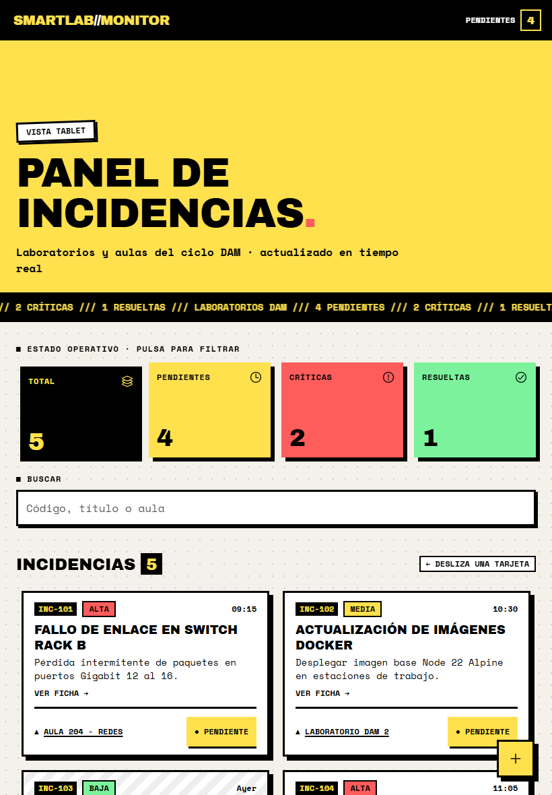
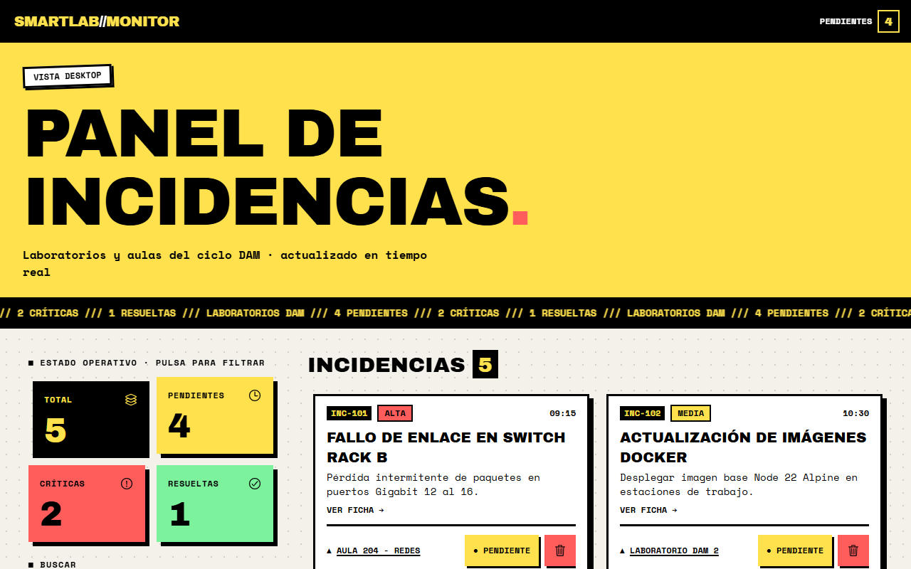
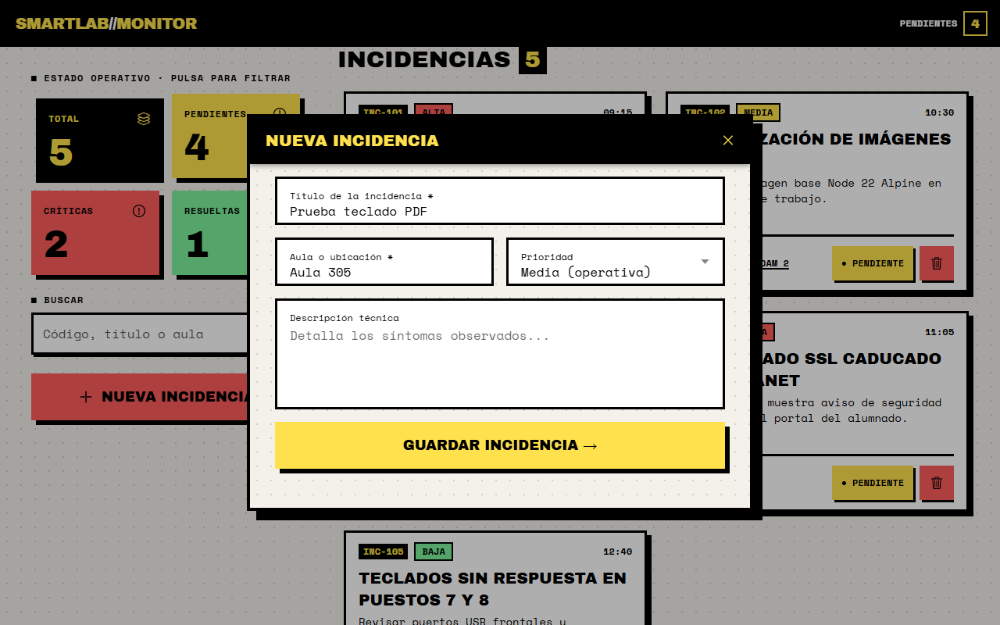
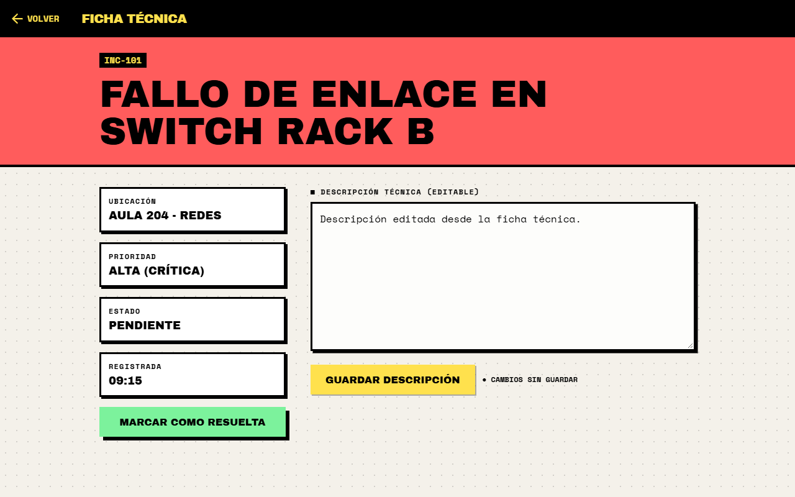
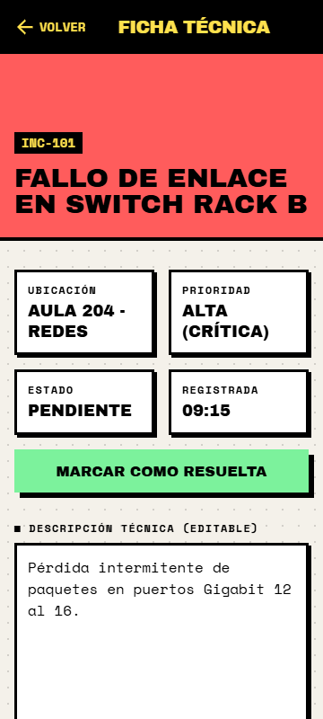
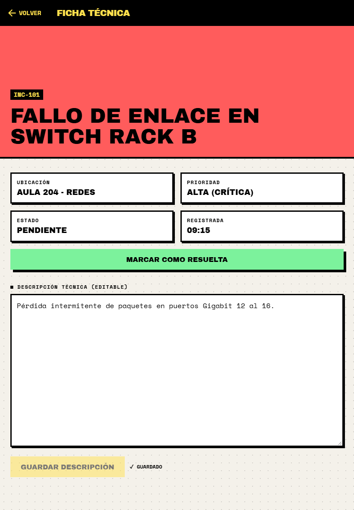
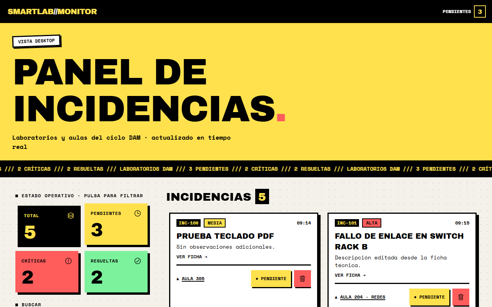

vh · persistencia local y ficha de detalle| Alumno | Guillermo Prat Astillero |
| Módulo | Desarrollo de Interfaces (0488) · 2.º CFGS DAM · Profesor: Carmelo |
| Entrega | Segunda oportunidad · 27 de noviembre de 2026 |
| Despliegue (Vercel) | https://smartlab-home-tw.vercel.app/home |
| Repositorio | https://github.com/clax-dev/DI-smartlab-home-tw |
| Docker (local) | docker build -t smartlab-ionic-tw:1.0 . → docker run -d -p 8080:80 smartlab-ionic-tw:1.0 → http://localhost:8080 |
| Stack | React 18 · TypeScript 5 · Ionic React 8 · Tailwind CSS 3.4 · Vite 5 · Capacitor 6 · Docker + Nginx |
Contexto (tipos de interfaz): Escritorio (Java AWT/Swing · JavaFX · FXML) · Python · App nativa mobile (Android Kotlin · iOS) · Web (HTML · RWD · híbridas). Interfaz visual: prototipado de pantallas (Adobe XD · Figma); estilos CSS / Sass (Bootstrap / Materialize · Tailwind).
Instrucciones: Crear un proyecto nuevo en React · Componente Home · Aplicar Tailwind.
Entrega: Home en RWD (Desktop · Mobile · Tablet) · Deploy en Vercel.
Revisión: comprobar que se ha aplicado brutalismo, interacciones y layout con vh.
Resultados de aprendizaje que trabaja: RA 1 (CE 1.a/1.b, flujo unidireccional y componentes desacoplados) · RA 2 (CE 2.b/2.c/2.d, JSX + Tailwind + variables CSS) · RA 3 (CE 3.a/3.c/3.e, gestos, modales, buscador y eventos tipados) · RA 4 (CE 4.b–4.e, mobile-first, áreas táctiles de 44 px, contraste WCAG 2.2 y aria-label) · RA 7 (CE 7.a/7.e, empaquetado con Capacitor y despliegue con Docker + Nginx).
Pasos base de la guía: (1) crear el proyecto con Ionic CLI y Vite · (2) instalar Tailwind 3.4 con configuración ESM · (3) directivas Tailwind y variables de tema · (4) modelo de dominio en TypeScript · (5) Home.tsx con contador, pull-to-refresh, buscador, filtro, KPIs, lista deslizable, modal, FAB y toast · (6) ejecución con npm run dev y contenedor Docker.
Partiendo de la arquitectura base desarrollada en esta guía, el alumno deberá extender la aplicación SmartLab Monitor cumpliendo los siguientes requisitos técnicos:
IonItemSliding) de Home.tsx hacia src/components/KpiCard.tsx y src/components/IncidentItem.tsx, definiendo sus interfaces de Props en TypeScript sin recurrir a any.localStorage (o @capacitor/preferences) sincronizada a través de un Custom Hook (useIncidentsStorage.ts), de modo que las altas, cambios de estado y eliminaciones sobrevivan a la recarga completa de la aplicación./incident/:id) registrada en IonRouterOutlet con botón de retorno nativo (<IonBackButton defaultHref="/home"/>) que muestre la ficha técnica completa de la incidencia seleccionada y permita editar su descripción.| Requisito | Cómo se cumple | Dónde verlo | Estado |
|---|---|---|---|
| Proyecto nuevo en React | React 18 + TypeScript sobre Vite 5, con Ionic React 8 como en la guía | package.json, src/main.tsx | ✔ |
| Componente Home | Home.tsx como contenedor que coordina la vista y delega en 3 componentes hijos | src/pages/Home.tsx | ✔ |
| Aplicar Tailwind | Tailwind 3.4 con configuración ESM, tema propio (paleta, sombras, fuentes, animaciones) y @apply | tailwind.config.js, variables.css | ✔ |
| RWD Desktop · Tablet · Mobile | Mobile-first con md: y lg:; tres layouts distintos (§4) | §4 y capturas §9 | ✔ |
| Deploy en Vercel | vercel.json con rewrite SPA; despliegue automático desde GitHub | URL de la portada · §8 | ✔ |
| Brutalismo | Bordes negros gruesos, sombras duras, colores planos, tipografía enorme, sin redondeos | §5 | ✔ |
| Interacciones | Botones físicos, KPIs-filtro, marquesina, animaciones, swipe, modal, toast, navegación a ficha | §5 | ✔ |
| Layout con vh | Hero, KPIs, panel, listado, ficha, textarea y modal dimensionados con vh | §5 | ✔ |
| Mejora 1 · Modularización | KpiCard, IncidentItem y además NewIncidentModal, con Props tipadas y sin any | src/components/ · §6.1 | ✔ |
| Mejora 2 · Persistencia | Custom hook useIncidentsStorage sobre localStorage; altas, estados, borrados y ediciones sobreviven a la recarga | src/hooks/ · §6.2 · §7 | ✔ |
| Mejora 3 · Ficha de detalle | Ruta /incident/:id en IonRouterOutlet, IonBackButton defaultHref="/home", descripción editable | src/pages/IncidentDetail.tsx · §6.3 | ✔ |
| Mejora 4 · Accesibilidad y RWD | Sin scroll horizontal en 360×800, 820×1180 y 1280×800; contraste ≥ 6,9:1; modal 100 % operable con teclado | §6.4 · §7 | ✔ |
| Mejora 5 · Repo + Docker | Repositorio Git limpio (.gitignore, sin node_modules ni dist); imagen construida y verificada en localhost:8080 | Dockerfile, nginx.conf · §8 | ✔ |
index.html ─► main.tsx ─► App.tsx (IonApp + IonReactRouter + IonRouterOutlet)
├─ "/" → Redirect a "/home"
├─ "/home" → pages/Home.tsx (contenedor de la vista)
│ ├─ components/KpiCard.tsx (presentación)
│ ├─ components/IncidentItem.tsx (presentación + gestos)
│ └─ components/NewIncidentModal.tsx (formulario, estado local)
└─ "/incident/:id" → pages/IncidentDetail.tsx (ficha técnica, edición)
hooks/useIncidentsStorage.ts ◄── usado por Home y por IncidentDetail
│ lista de incidencias (una sola fuente de verdad)
└─► localStorage["smartlab.incidents.v1"] (semilla: data/initialIncidents.ts)
types/incident.ts modelo de dominio tipado
theme/variables.css @tailwind + tokens Ionic + personalización del Shadow DOM
Flujo unidireccional: los datos bajan a los hijos como props y los eventos suben como callbacks (onToggleStatus, onDelete, onOpenDetail, onCreate). Ningún componente de presentación modifica la lista: solo el hook useIncidentsStorage la escribe, y lo hace a través de acciones con nombre (addIncident, toggleStatus, deleteIncident, updateDescription).
| Decisión | Motivo | Alternativa descartada |
|---|---|---|
| Ionic React + Tailwind | Es el stack de la guía: Ionic aporta controles móviles (deslizar, FAB, modal, back button) y Tailwind el layout responsive. | React + Vite sin Ionic: habría que programar a mano gestos y navegación móvil. |
| Home dividido en 3 componentes | Responsabilidad única: cambiar el diseño de la tarjeta solo toca IncidentItem. | Un único Home.tsx de ~450 líneas, como en la guía. |
| Estado de la lista en un hook con almacén externo | IonRouterOutlet mantiene Home montado al ir a la ficha; un único almacén evita dos copias desincronizadas. | useState + useEffect en cada página: la edición en la ficha no se vería al volver sin recargar. |
| Estado del formulario dentro del modal | El tecleo no repinta todo el Home; el padre solo recibe datos validados. | Mantener los 4 useState del formulario en Home. |
| Botones y buscador nativos con Tailwind | El brutalismo exige controlar borde, sombra y foco; en un <button> nativo Tailwind llega a todo. | IonButton/IonSearchbar: su aspecto vive en el Shadow DOM. |
| Shadow DOM personalizado con variables CSS | Las clases de Tailwind no penetran en el Shadow DOM de Ionic. | className="--padding-start:16px" como en la guía: no es una clase válida y el navegador la ignora. |
Las clases sin prefijo definen el diseño móvil; md: (≥ 768 px) y lg: (≥ 1024 px) añaden cambios para pantallas más anchas. La pegatina «Vista Mobile / Tablet / Desktop» del hero indica qué layout está activo.
| Vista | Ancho | Home | Ficha de detalle | Clases clave |
|---|---|---|---|---|
| Mobile | < 768 px | 1 columna · KPIs 2×2 · FAB para crear · acciones con gesto de deslizar · modal a pantalla completa | Datos en rejilla 2×2 y descripción debajo | grid-cols-2, IonFab |
| Tablet | 768–1023 px | KPIs en fila de 4 · tarjetas en 2 columnas · hero más grande · modal centrado de 640 px | Igual que móvil con título mayor | md:grid-cols-4, md:grid-cols-2, sm:text-6xl |
| Desktop | ≥ 1024 px | Panel lateral fijo de 360 px + rejilla de tarjetas · sin FAB · botón de borrar visible (no hay gesto con ratón) | 2 columnas: datos (300 px) + editor | lg:grid-cols-[360px_1fr], lg:sticky, lg:hidden |
| Requisito | Qué se ha hecho | Clases / código clave |
|---|---|---|
| Brutalismo | Bordes negros de 3–4 px, sombras duras sin desenfoque, colores planos saturados, títulos gigantes en mayúsculas (Archivo Black) y texto en Space Mono, ninguna esquina redondeada, fondo de puntos y trama rayada en las incidencias resueltas. | border-[3px] border-brut-ink, shadow-brut (6px 6px 0 #000), paleta brut-*, font-display; en Ionic --border-radius: 0 |
| Interacciones | Botón «físico» que se levanta con el ratón y se hunde al pulsar · KPIs clicables que filtran el listado (el activo se ve invertido y hundido) · tarjetas que se levantan · animación al crear · marquesina con contadores en vivo que se pausa al pasar el ratón · buscador resaltado al enfocar · gesto de deslizar en móvil · pull-to-refresh · enlace «Ver ficha →» · guardado con indicador «Cambios sin guardar / Guardado». | .brut-press con @apply hover:-translate-* active:translate-x-[6px] active:shadow-none, aria-pressed, animate-pop, animate-marquee, IonItemSliding, IonRefresher |
| Layout con vh | Hero proporcional a la ventana · KPIs con alto mínimo · panel lateral que nunca supera la ventana · listado con alto mínimo para que no «salte» al filtrar · estado vacío · cabecera y editor de la ficha · modal limitado al 85 % de la ventana. | min-h-[38vh] md:min-h-[32vh] lg:min-h-[34vh], min-h-[12vh], lg:max-h-[calc(100vh-7rem)], lg:min-h-[60vh], min-h-[30vh], min-h-[26vh], --height: min(500px, 85vh) |
Accesibilidad de las interacciones: hoverOnlyWhenSupported evita el hover «pegado» en pantallas táctiles, las animaciones se desactivan con motion-reduce: y el foco de teclado se marca con un contorno de 4 px.
KpiCard (props label, value, icon, tone, active, onSelect) e IncidentItem (props incident, onToggleStatus, onDelete, onOpenDetail) son componentes de presentación con interfaces exportadas y sin any. Los tonos de color se tipan como unión ('neutral' | 'warning' | 'danger' | 'success') y se mapean a clases completas, porque Tailwind no detecta clases construidas concatenando texto. Además se extrajo NewIncidentModal, que guarda su propio estado de formulario.
useIncidentsStoragelocalStorage["smartlab.incidents.v1"]. La primera vez (o si los datos guardados están corruptos) usa los datos semilla.useSyncExternalStore; cada acción escribe en localStorage y avisa a los suscriptores, así Home y la ficha ven siempre la misma lista. El evento storage sincroniza también otras pestañas abiertas.isIncident) y se vuelve a la semilla; almacenamiento bloqueado o lleno → try/catch y la app sigue funcionando en memoria.INC-NNN existente + 1 (la guía usaba un número aleatorio que podía repetirse)./incident/:idIonRouterOutlet (App.tsx); el id llega por la URL con useParams.IncidentItem avisa con onOpenDetail y Home navega con useIonRouter().push(...) (transición nativa de Ionic).<IonBackButton defaultHref="/home" /> vuelve con el historial; si se abre la ficha directamente por URL (sin historial), defaultHref lleva a /home.scrollWidth = clientWidth en Home y ficha a 360×800, 820×1180 y 1280×800 (§7).min-h-11), aria-label en los botones de solo icono, aria-pressed en los KPIs-filtro y aria-live en contadores y estado de guardado.El repositorio excluye node_modules, dist y .vercel. El Dockerfile es multietapa: node:22-alpine compila con npm ci (instalación exacta según package-lock.json) y nginx:1.27-alpine sirve dist/. nginx.conf añade try_files … /index.html para que las rutas de la SPA (/home, /incident/:id) no den 404 al recargar.
Pruebas automatizadas con Playwright + Google Chrome contra la imagen Docker en http://localhost:8080 (el mismo build de producción que se publica en Vercel). Resultado: 27 de 27 comprobaciones superadas.
| Comprobación | Resultado |
|---|---|
| Home y ficha sin scroll horizontal a 360×800 · 820×1180 · 1280×800 (6 pruebas) | ✔ 360=360 · 820=820 · 1280=1280 |
| Teclado: Tab alcanza «Nueva incidencia» · Enter abre el modal · el foco queda dentro · Enter envía y crea · Esc cierra | ✔ 5/5 |
| Persistencia tras recarga: alta · cambio de estado · eliminación | ✔ 3/3 |
Ficha: URL /incident/INC-101 · back button vuelve a /home · Home muestra la descripción editada · la edición persiste tras recargar | ✔ 4/4 |
Ficha abierta por URL directa + «Volver» → /home (defaultHref) · id inexistente muestra aviso | ✔ 2/2 |
| Contraste: negro sobre amarillo 16,13 · rojo 6,94 · verde 15,04 · azul 11,37 · papel 18,62 · blanco 21,00 · amarillo sobre negro 16,13 | ✔ 7/7 (≥ 4,5:1) |
Compilación TypeScript estricta + build de Vite (npm run build) | ✔ sin errores |
Contenedor Docker: GET / y GET /incident/INC-101 en el puerto 8080 | ✔ 200 · 200 |
vercel.json declara el framework Vite, el comando npm run build y la carpeta dist./(.*) → /index.html hace que recargar /home o /incident/INC-101 no dé 404: la ruta la resuelve React en el navegador (SPA) y no existe como fichero en el servidor.git push a main vuelve a desplegar automáticamente.docker build -t smartlab-ionic-tw:1.0 . docker run -d -p 8080:80 --name smartlab-container smartlab-ionic-tw:1.0 # → http://localhost:8080/home y http://localhost:8080/incident/INC-101 responden 200
npm install npm run dev # http://localhost:5173 npm run build # build de producción en dist/ (lo mismo que ejecuta Vercel y Docker) npm run preview # sirve dist/ en http://localhost:4173









Todos los archivos del proyecto escritos o configurados para esta práctica (se excluyen node_modules, dist y package-lock.json, que se generan automáticamente).